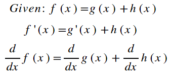
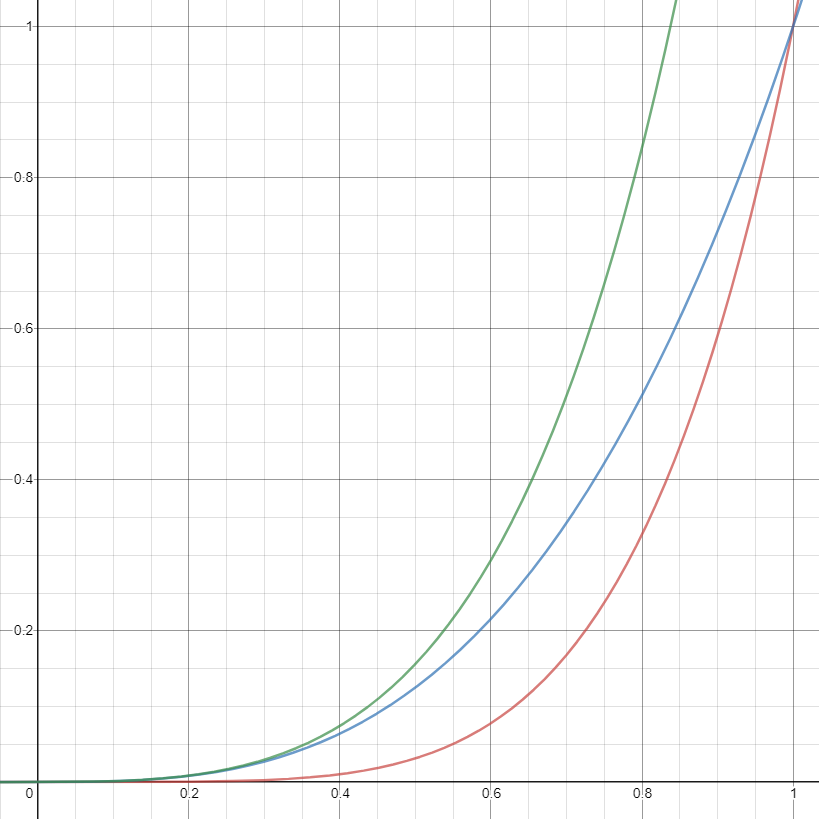
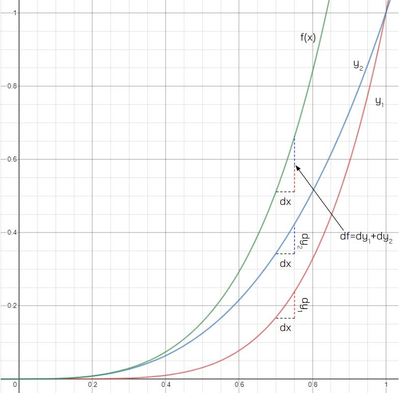
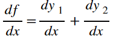

Back to Home
Keaton Hawkins AP Calculus AB Final
The existence of the power rule makes finding derivatives of monomials much easier than it would be if we had to use the limit definition every time. Admittedly, though, it's rare that functions we encounter are simple monomials. Usually, they are some combination of other functions. For instance, the function f(x) = sin(x)+3x2 is the sum of two separate functions: sin(x) and 3x2. Suppose we had a function g, which was defined as follows: g(x) = x5 + x3. What would we do if we wanted to find its derivative? Could we just "distribute" the derivative to each of the terms in the function? Yes, actually, you can. The sum rule tells us how to handle taking derivatives of functions that are defined as the sum of two other functions:

So for our function, f(x), its derivative, f'(x) = 5x4 + 3x2. It seems right that this should work. If f(x) = g(x) + h(x), then the derivative of f(x) should just be the derivative of g(x) plus the derivative of h(x). If that just feels correct, good! It can never hurt to have strong mathematical intuition. But this does not hold true for multiplication. That is, if f(x) = g(x)•h(x), then the derivative of f(x) does NOT equal the derivative of g(x) times the derivative of h(x). So let's take a moment to analyze why exactly the sum rule works. To do that, let's recall what adding functions means graphically. Consider the graph below. The red curve is x5, the blue curve is x3, and the green curve is x5 + x3:

Perhaps the reasoning is already becoming clear. Because the function for the green curve is equal to the sum of the respective functions of the red curve and blue curve, the distance between the green curve and the x-axis is the distance between the blue curve and the x-axis plus the distance between the red curve and the x-axis. Spend a moment looking at the graph to grasp that fully. Pick a point on the x-axis. Imagine drawing a line straight up until it intersects the red curve. Then, do the same with the blue curve. Now stack those two lines on top of each other, and they will go exactly up to the green curve. So then, let's consider a change in output, dy, caused by an infinitesimally small change in input, dx.
When you nudge the input slightly, the height of the red and blue curves each increase slightly. The green curve, whose height above the x-axis is always the sum of the heights of the blue and red curves will increase by an amount equal to the sum of the amounts by which the blue and red curves increased, won't it? Consider the labels below:

First of all, I assigned labels to each curve. The red curve is y1 = x5, the blue curve is y2 = x3, and the green curve is f(x) = x3 + x5. Now consider the other labels added to the graph. For each one, a dx and a resultant dy are labelled. The dx is the same for each of them. On the graph, it is shown to be 0.1 units wide, but remember that this is exaggerated to illustrate the point. In reality you should think of dx as an infinitesimally small value. The resultant changes in y are color coded. dy1 is represented by the red dashed line. dy2 is represented by the blue dashed line. What about df? As you can see, df is equal to dy1 + dy2. This makes perfect sense, since the value of f is y1 + y2. So, a change in the value of both of those functions will result in a change in f that is equal to the sum of the changes in those functions. And remember! dx is the same for all of them. So if df = dy1 + dy2, then:

And there we have our sum rule! Note that because subtraction is just multiplying one term by negative one and then adding, the sum rule also applies when a function is defined as the difference between two other functions. That's why it's called the sum/difference rule.